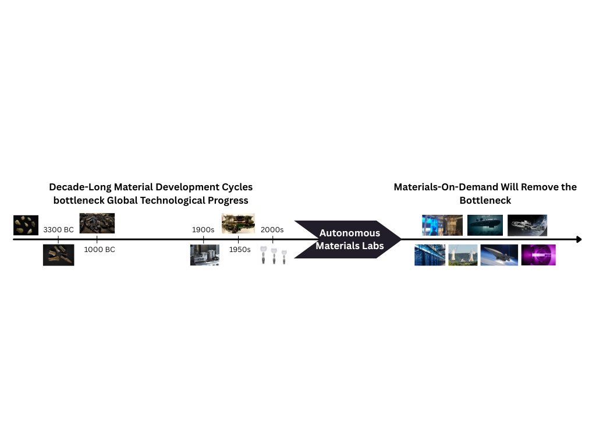

We develop self-driving labs that condense the alloy and ceramic development timeline by an order of magnitude, driving technology forward.
ContactMaterials are commonly the bottlenecks that prevent technology advancement (e.g., fusion energy, hypersonic flight) and limit product capabilities and performance due to the decades-long development cycle.
At Autonomous Materials Labs, we create autonomous machines for materials synthesis, manufacturing, characterization, and testing to shorten materials development timeline from decades to months or weeks to enable paradigm shift from materials constrained by catalog to materials-on-demand.
Materials are used by historians to define eras in human history, e.g., Stone Age, Bronze Age, Iron Age. Materials set the ultimate limits for technological advancement.

If you are an innovator, reach out to us.
bbremmer@wisc.edu